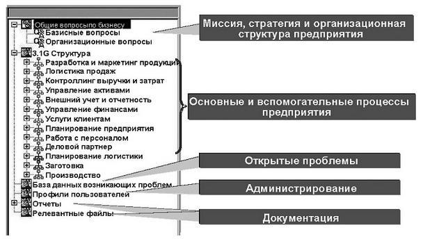
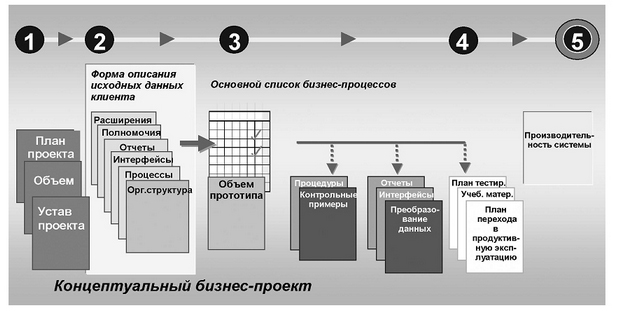

[ Тематический план ] [ Внедрение информационных систем ] [ 1 ] [ 2 ] [ 3 ]
Фаза "Предварительные работы по подготовке проекта внедрения ИС". В ходе предпроектного обследования предприятия (Рис. 1.4. Схема обследования предприятия) собирается подробная информация о структурном построении организации, функциональных связях, системе управления, об основных бизнес-процессах, о потоках внутри предприятия (Control Flow, Doc Flow, Data Flow, Work Flow, Cash Flow), необходимая для построения соответствующих моделей и выбора объектов для автоматизации. Оцениваются сроки, ресурсы, виды и объемы работ, номенклатура и стоимость программно-аппаратных и телекоммуникационных средств, стоимость обучения персонала и т. д.
Фаза "Подготовка проекта". После завершения первой фазы осуществляется предварительное планирование и формирование процедур запуска проекта:
Последний очень важный момент почему-то часто пропускается при составлении плана внедрения. А ведь от него в огромной степени зависит успех всего проекта! После начала финансирования проект считается запущенным к исполнению.
Фаза "Концептуальная проработка проекта". В течение этой фазы:
При этом все указанные действия в обязательном
порядке документируются, согласуются и утверждаются всеми заинтересованными и
ответственными сторонами.

Рис.
5.1. Примерное содержание репозитория проекта внедрения
Фаза "Реализация проекта". Во время проведения основных работ по внедрению создается, устанавливается и конфигурируется системная среда, определяются процедуры системного администрирования, устанавливаются основные программно-аппаратные комплексы и приложения. В системе настраиваются организационно-штатные и организационно-функциональные структуры предприятия с использованием таких организационных единиц, как филиал, департамент, отдел, рабочая группа и т. д.
Осуществляется установка, конфигурирование и настройка
сетевых и телекоммуникационных средств, производится перенос данных из прежних
локальных систем и формирование интерфейсов с унаследованными и внешними
системами. При этом все создаваемые модели, планы, рабочие программные
продукты, документация помещаются в сквозной репозиторий проекта внедрения (рис.
5.1). Важной частью этого репозитория является система документации,
формируемая в рамках проекта (рис. 5.2).

Рис. 5.2. Примерный состав документации по процессу внедрения ИС
Отрабатываются системные вопросы безопасности работы системы в многопользовательском режиме. Создаются приложения, шаблоны, отчеты, клиентские формы доступа, распределятся полномочия пользователей. Проводится "прогонка" всех систем в "боевом режиме" с участием всех заинтересованных сторон. После окончания фазы реализации проект внедрения считается законченным. Информационная система передается в эксплуатацию.